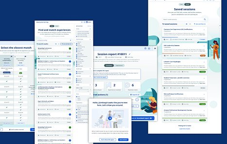
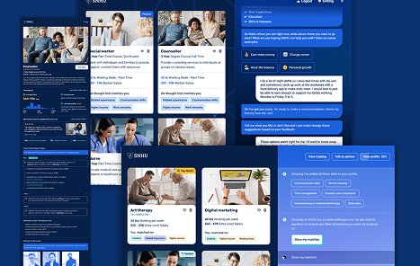
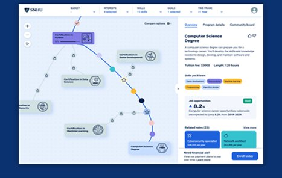
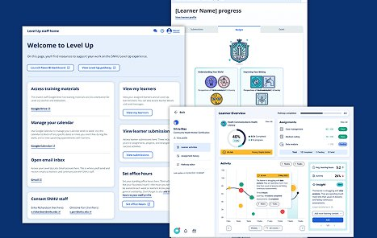

One of the largest nonprofit online universities in the U.S. had scattered designers but no product design function (no standards, no systems, no operating model) while needing to modernize learner-facing technology at scale.
SNHU needed a real product design organization: the team, the craft, and the systems, all at the same time, in an institution serving hundreds of thousands of learners.
I was hired to build it and to raise the bar on how design shows up across learner-facing products.

An ML registrar tool I directed that cut credit-processing time in half. The registrar team adopted it fast, and it showed how far AI could move a core campus workflow.

An AI pathway system giving new students just-in-time guidance. The proof of concept showed AI and ML could turn a hard onboarding moment into a confident first step.

A flexible program pathway that adapts to each learner's interests and goals, presenting complex material in digestible steps so students learn at their own pace.

Tools and training that let advisors give personalized support, with a streamlined registrar experience for managing records and registration.
Three cuts from the Level Up pilot: the video that invited learners in, the one that onboarded them after they accepted, and a walkthrough of the platform and its AI-powered tools.